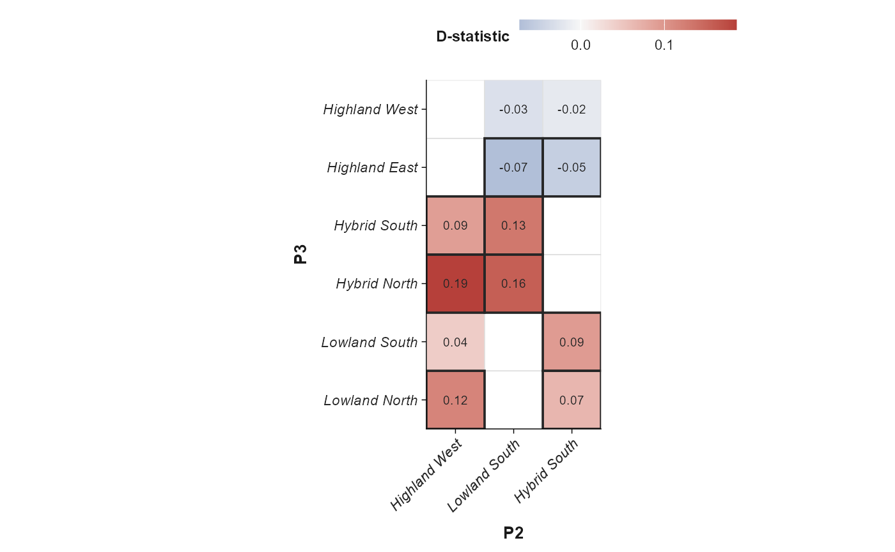
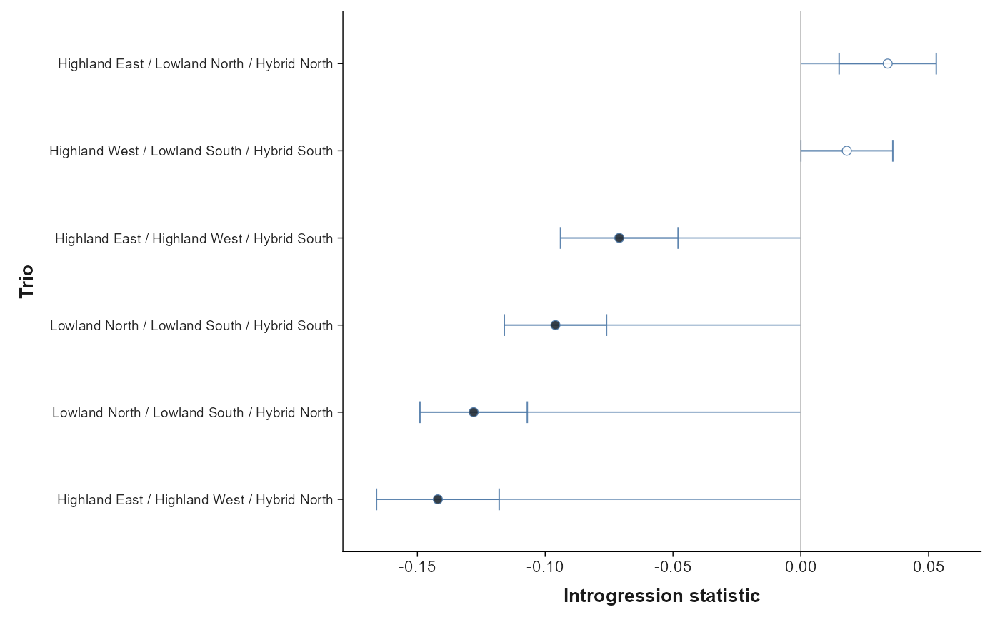
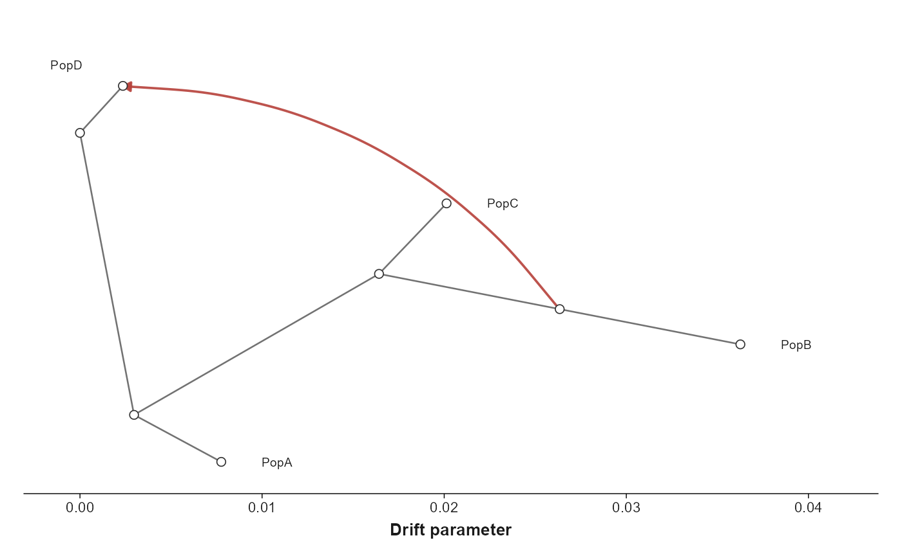
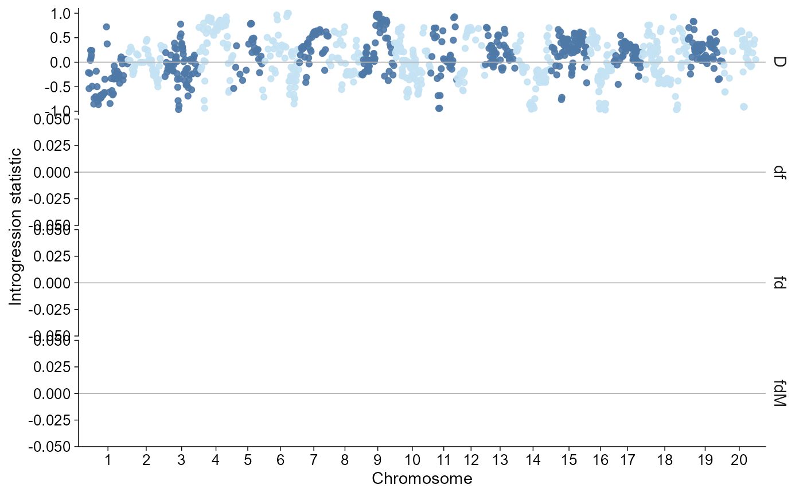

ggPopi imports common introgression summaries into a
typed ggpop_introgression object. The module is
intentionally split by result semantics:
- Dsuite localFstats /
Dinvestigateoutputs are genomic window scans. - Dsuite
BBAA/Dminoutputs are trio-level D-statistic summaries. - ADMIXTOOLS
qpdstat,f3, andf4ratiooutputs are trio statistic tables, not graph edges. - TreeMix internal
*.edges.gz/*.treeout.gzfiles are imported as a lightweight graph summary. Full TreeMix tree-layout and residual heatmap views belong to a dedicated TreeMix plotting layer.
API summary
| Task | API | Notes |
|---|---|---|
| Import Dsuite global trio results | import_introgression(file, type = "dsuite_dtrios") |
BBAA, Dmin, and similar Dsuite trio
tables |
| Import Dsuite local windows | import_introgression(file, type = "dsuite_dinvestigate") |
D, fd, fdM, and
df window statistics |
| Import ADMIXTOOLS statistics | import_introgression(file, type = "admixtools") |
qpdstat, f3, and f4ratio
CSV/table outputs |
| Import TreeMix summaries | import_introgression(file, type = "treemix") |
Lightweight tree/migration edge summaries |
| Direct plot | plot_introgression(data, stat = ...) |
Returns a ggplot object |
| Layered plot | ggpop(data) + geom_introgression(...) |
Tidy ggplot extension path |
Dsuite Window Scans
Dsuite Dinvestigate / localFstats files are imported in
long form, with one row per statistic per genomic window. Genome-wide
calls default to a chromosome-wise Manhattan-like window plot, a common
pattern in population genomics scripts for D,
fd, fdM, and df.
dsuite_windows <- import_introgression(
ggpop_extdata("introgression", "Dsuite", "PopB_PopC_PopA_localFstats_run1_100_50.txt"),
type = "dsuite_dinvestigate"
)
class(dsuite_windows)
#> [1] "ggpop_introgression" "data.frame"
unique(dsuite_windows$stat)
#> [1] "D" "fd" "fdM" "df"
plot_introgression(dsuite_windows, stat = c("D", "fdM"))
When a chromosome or region is supplied, the direct plot uses a local position axis in megabases and draws a point-and-line trace.
plot_introgression(dsuite_windows, stat = "D", chr = "1")
Dsuite Trio Summaries
Dsuite global BBAA / Dmin outputs are
imported as trio-level D statistics. The bundled trio table is a
biologically structured toy example with highland, lowland, and hybrid
populations. The default plot is a Dsuite-style P2 x P3
matrix: population pairs define the tile grid, D statistic defines the
diverging fill, and significant cells are outlined without changing the
colour scale. If repeated rows share the same P2/P3 combination, the
matrix keeps the row with the largest absolute D value and preserves its
sign, so strong negative signals remain visible after aggregation.
Population labels are cleaned for display only, so names such as
Highland_East are plotted as Highland East
while the imported data keeps the original identifiers.
dsuite_bbaa <- import_introgression(
ggpop_extdata("introgression", "Dsuite", "dsuite_results_BBAA.txt"),
type = "dsuite_dtrios"
)
plot_introgression(dsuite_bbaa)
Use style = "trio" when the same Dsuite table should be
shown as an ordered forest/lollipop summary. This keeps the sign visible
and uses filled points for significant rows.
plot_introgression(dsuite_bbaa, style = "trio")
ADMIXTOOLS Statistics
ADMIXTOOLS outputs are statistic tables. qpdstat is
imported as stat = "D", f3 as
stat = "f3", and f4ratio as
stat = "f4_ratio". These should be drawn as trio summaries
with standard-error bars when se is present. The example
tables use the same highland/lowland/hybrid population set so the
forest-style summaries show both significant admixture and near-zero
contrasts. Z/P columns are retained in the data rather than being
coerced into graph edges. When multiple statistic families are plotted
together, ggPopi facets by stat so
D-statistics, f3 values, and f4-ratio estimates are not mixed on a
single scale.
qpdstat <- import_introgression(
ggpop_extdata("introgression", "admixtools", "qpdstat_result.csv"),
type = "admixtools"
)
f3 <- import_introgression(
ggpop_extdata("introgression", "admixtools", "f3_result.csv"),
type = "admixtools"
)
f4ratio <- import_introgression(
ggpop_extdata("introgression", "admixtools", "f4ratio_result.csv"),
type = "admixtools"
)
unique(qpdstat$stat)
#> [1] "D"
unique(f3$stat)
#> [1] "f3"
unique(f4ratio$stat)
#> [1] "f4_ratio"
plot_introgression(qpdstat)
admixtools_all <- import_introgression(
ggpop_extdata("introgression", "admixtools"),
type = "admixtools"
)
plot_introgression(admixtools_all)
TreeMix Edge Summaries
TreeMix full plotting requires its own tree layout and covariance
residual logic. In this module, TreeMix internal *.edges.gz
and *.treeout.gz outputs are imported as a compact graph
summary so migration and tree edges can still be inspected in the same
tidy workflow. When a matching *.vertices.gz file is
available next to an *.edges.gz file,
import_introgression() uses it to keep the TreeMix
drift-coordinate layout instead of falling back to a generic graph. The
lightweight graph labels population tips only; internal TreeMix node
identifiers are kept out of the display.
treemix_edges <- import_introgression(
ggpop_extdata("introgression", "treemix", "treemix.M1.edges.gz"),
type = "treemix"
)
table(treemix_edges$stat)
#>
#> migration tree
#> 1 7
plot_introgression(treemix_edges)
Covariance residual heatmaps, migration-model comparison, and full TreeMix diagnostics are intentionally left for a dedicated TreeMix API rather than being folded into the generic introgression layer.
Layered Path
Use ggpop() plus geom_introgression() when
composing with additional ggplot layers.
dsuite_windows |>
ggpop() +
geom_introgression(stat = "D")